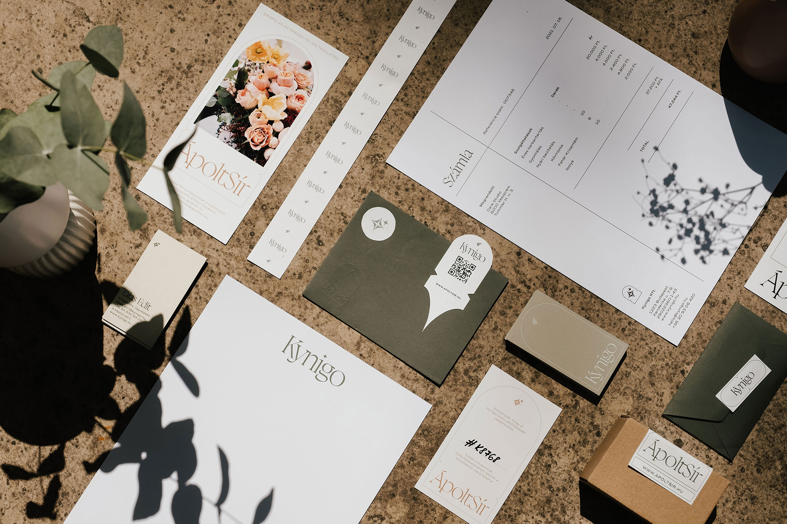
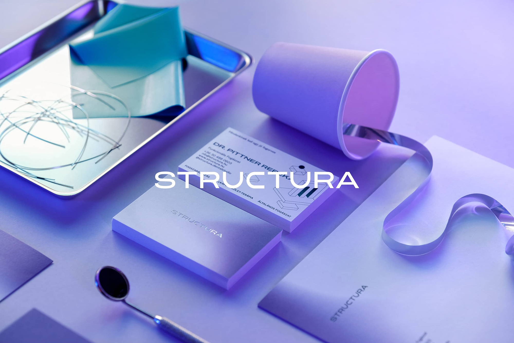

Merni valamit, venni a bátorságot… ezt éreztem tökéletes névnek, amikor eldöntöttük, hogy Istivel belevágunk a saját vállalkozásba. A mottónk – on a mission to be brave – pedig a bátorságunk folyamatos fenntartását jelenti. Minden nap, minden héten igyekszünk túlnyúlni a takarónkon, a legjobbat nyújtani a megrendelőinknek és elérni a céljainkat.
Nekem már volt valamennyi megrendelői kapcsolati hálóm, szóval elkezdtünk gőzerővel dolgozni. Vannak unalmas adminisztratív teendők is kezdőként, mint az adózási forma vagy a számlázó program kiválasztása, de nyilván abból áll a dolog lényege, hogy szerzel egy ügyfelet, vagy csinálsz egy saját melót, amit elég jónak gondolsz, és kiteszed a világ elé. Aztán még egyet és még egyet. Egy idő után a jól végzett munkád fogja jelenteni a saját PR-odat, ami alapján fognak megkeresni.
Amíg vannak kitűzve új célok, addig nem érzem, hogy elértük volna a kész állapotot, szerintem sosem lesz ilyen. A Dare mellett elindítottunk egy másik projektet a SédShop.Co-t, ahol hozzánk hasonló kreatívoknak készítünk mockupokat, hogy gyorsan és egyszerűen tudják prezentálni a munkájukat. A két vállalkozás párhuzamos működtetése úgy, hogy mindkettő folyamatosan fejlődik, az idei év egyik legnagyobb kihívása. Mi volt számodra az eddigi legizgalmasabb, kihívással teli
Sokáig gondolkodtam a tanárképzésen, úgyhogy ezt jó visszahallani egy volt gyakornoktól. Tavaly tartottam online egy beszélgetést a szenvedélyről, szabadúszásról és a munkához való hozzáállásról, amire jó visszajelzések jöttek. Úgy látszik, van arra igény, hogy grafikusok és hasonszőrű kreatívok megosszák tapasztalataikat egymással. Egyelőre a studión belül élem ki az ilyen irányú törekvéseimet, de látszólag lenne értelme ezzel sűrűbben is foglalkozni. A stúdió berkein belül kifejlesztettünk egy tudásanyagot, ami lefedi azt a mennyiségű információt, ami szerintem elengedhetetlen a szakmához, nem kronologikusan, hanem összefüggésekben rendszerez. Még nem találtam meg a megfelelő platformot ennek a felhasználására, sem a hozzá szükséges plusz időt, de bízom benne, hogy egyszer ez a projekt is előtérbe kerül.
Kezdj el dolgozni, és kezd el kitenni a munkáidat valahova! Az hogy ez Instagram, Tiktok, Behance vagy saját weboldal, szinte mindegy. Ezt látom a legnehezebb lépésnek, de minket így találtak meg a legtöbben. Tudom, hogy milyen, amikor megjelenik az imposztor szindróma… Beszélgess, és oszd meg tapasztalataidat a szaktársakkal, kortársakkal! Szerintem jó lépés az egyetem után egy fix munkahely, mellette a saját munkákat párhuzamosan lehet vinni, később eljön az idő és az az anyagi körülmény, amikor meg lehet lépni a saját vállalkozást is. Fontos nézőpont, hogy egy saját vállalkozásnál nem csak grafikus vagy, hanem mindenes is. Pénzügyes, árajánlatíró, kapcsolattartó, neked kell kontrollt tartani a fizetéseken. Egyszerre viszel mindent a válladon. Szerintem érdemes ezelőtt megtapasztalni azt a csodás érzést, hogy csippan a telefon a fix fizetéssel minden hónapban.
Értem a kérdést, főleg egy művészeti intézet nézetéből. Én erre mindig egy szóhoz nyúlok vissza: kreativitás. Egyéni alkotóképesség, teremtőképesség, amikor egy személy a saját képzelőerejét felhasználva új ötletekkel áll elő egy probléma megoldása során, vagy új dolgot hoz létre. Ebből kiindulva nemcsak egy művész kreatív, hanem egy autószerelő, ügyvezető vagy programozó is. Én a megrendelői projektekben is megtalálom azt, amiben ki tudom élni a kreativitásom. Nagyon sok értéket látok abban, hogy megrendelői munkákat is szabadabb alkotó nézőponttal vegyítve, ebbe az irányba tereljük.
Az igazán jó munkához elengedhetetlen az erős koncepció, ezt támasztja alá a vizuális megjelenés. A megrendelői munkáknál fel kell ismerni, mikor mire van szükség. Például egy átlagos árkategóriájú étrendkiegészítőnél nem szükségszerű a mély konceptuális kutatás és „művészieskedés”, egy kiállítás arculatánál vagy egy kiadványnál több lehetőség van erre. A lényeg mindkét esetben a vizuális kommunikáció minősége, de a különbséget a képzőművészet és az alkalmazott művészet között nem szabad elfelejteni.
Merj nemet mondani, és tartsd meg a személyes integritásod! Az integritásnak van egy olyan olvasata, hogy minden más irányú késztetés ellenére azt csinálod, amiről tudod, hogy helyes – átvitt értelemben ez az önbecsülés, a saját magaba vetett hited. Hiszem, hogy a saját integritásod fontosabb mint mások véleménye. A MOME képzése óta sok minden formálódott bennem azzal kapcsolatban, hogy mit is szeretnék csinálni a szakmán belül. Az egyetemen többször azt a kritikát kaptam, hogy nincs egy meghatározott stílusom. Azóta ebből előnyt kovácsoltam, és megtanultam szeretni, hogy a Dare portfóliója sokrétű, ahogy a megrendelők és a megoldandó feladatok is azok.
Úgy gondolom, hogy kétféle módon érezheted rosszul magad a döntéseid után: tudod, hogy valamit meg kellett volna tenned, de nem tetted, vagy valamit megtettél, pedig tudod, hogy nem kellett volna. Lehet, hogy ezzel csak én vagyok így, de az első munkák során még nem hallgattam az ösztöneimre, így belefutottam a klasszikus rémálom ügyfelekbe. Idővel rájöttem, hogy nem az ő hibájuk volt. Nem tartottam a saját integritásom, mert soha nem volt elég bátorságom, hogy nemet mondjak. Érdekes, hogy ezek az ügyfelek idővel eltűntek és az utóbbi két évben csak jófej emberekkel dolgoztunk együtt a Dare-ben. Nem érdemes pazarolni a saját idődet, inkább tanulj meg nemet mondani!
Csapat
Kynigo
Structura